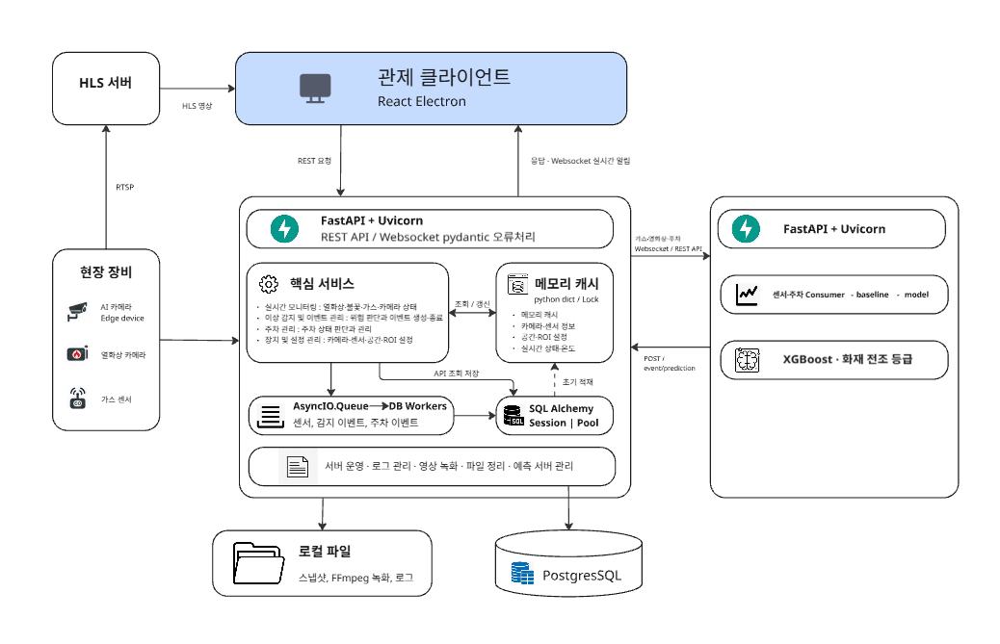
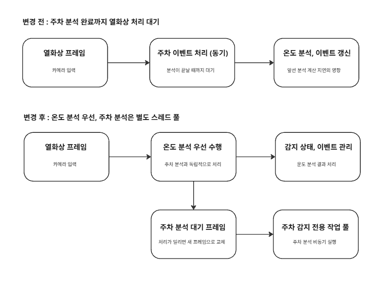
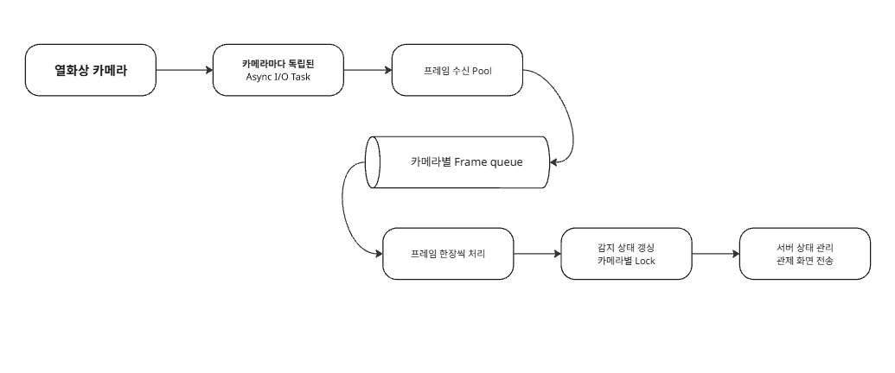
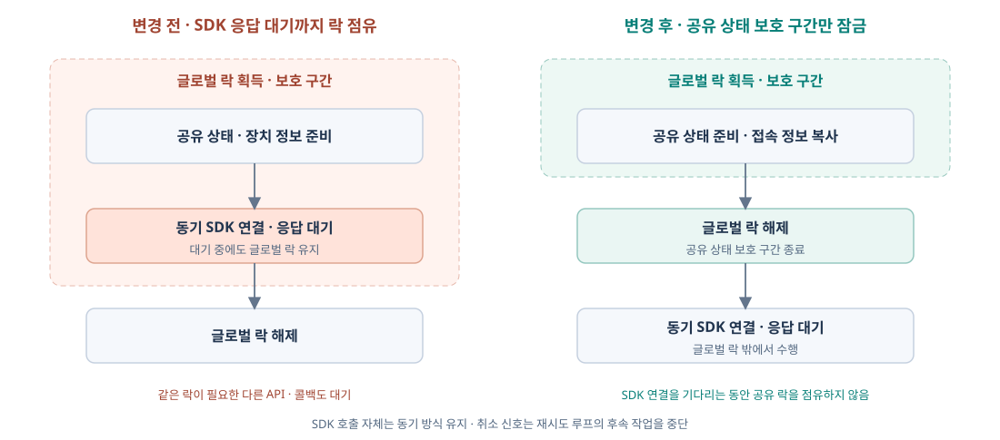

영상과 상태 정보 전달
AI 카메라·열화상 카메라·가스 센서를 연동합니다. React Electron 클라이언트는 HLS 영상을 재생하고, REST API 요청과 WebSocket 알림으로 현장 상태를 확인합니다.
백엔드 개발 포트폴리오
열화상 카메라와 가스 센서를 연동해 감지 결과를 저장하고, 관제 화면에 실시간으로 전달하는 백엔드를 개발했습니다.
01
시스템 아키텍처
현장 카메라와 가스 센서의 데이터를 Python 관리 서버에서 통합하고, 별도 예측 서버의 화재 전조 등급을 관제 화면에 전달합니다. 영상은 HLS로 제공하고, 상태 조회와 실시간 알림은 REST API·WebSocket으로 처리합니다.

AI 카메라·열화상 카메라·가스 센서를 연동합니다. React Electron 클라이언트는 HLS 영상을 재생하고, REST API 요청과 WebSocket 알림으로 현장 상태를 확인합니다.
FastAPI 핵심 서비스와 메모리 캐시가 카메라·센서·공간·ROI 상태를 관리합니다. 센서·감지·주차 이벤트는 asyncio.Queue와 DB 워커를 거쳐 PostgreSQL에 저장하고, 스냅샷·녹화·로그는 로컬 파일로 관리합니다.
별도 FastAPI 서버가 센서·주차 데이터를 받아 baseline과 모델로 분석합니다. XGBoost 기반 화재 전조 등급은 관리 서버의 예측 이벤트 API로 전달됩니다.
담당 업무 — 카메라·센서 연동, 감지 이벤트 저장·상태 관리, WebSocket 스트리밍과 외부 장비 연동을 담당했습니다. C++ 수집·분석 서버의 구조 개선과 Python 기반 다중 카메라 처리 구조 설계에도 참여했습니다.
열화상 온도맵
가스·불꽃 감지 상태
카메라별 프레임 큐
연결 상태·재연결
관심 영역(ROI) 분석
주차 상태 연계
감지 상태 갱신
발생·변경·종료 기록
실시간 상태·이력 조회
녹화·외부 장비 연동
Python 관리 서버를 중심으로 통합한 처리 흐름입니다. 분석 결과는 이벤트 저장과 실시간 전송에 각각 사용합니다.
02
백엔드 구조
카메라 연결, 프레임 수신, ROI 분석과 화면 전송을 나누어 처리합니다. 분석 대기열의 크기를 제한하고, 카메라별 상태 갱신 순서와 락 범위를 관리합니다.
SDK 제어, 카메라별 프레임 읽기, ROI 계산에 별도의 스레드 풀을 사용합니다. 연결이나 입력을 기다리는 작업을 이벤트 루프에서 직접 실행하지 않고, 완료된 결과를 비동기 처리 흐름으로 돌려줍니다.
처리 방식SDK 호출과 프레임 수신은 별도 스레드 풀에 위임하고, ROI 계산에 사용하는 워커 수를 제한합니다.
분석을 기다리는 프레임은 카메라별로 하나만 유지합니다. 새 입력이 도착하면 오래된 대기 프레임을 교체해, 처리 속도보다 입력이 빠를 때 대기 프레임이 계속 쌓이지 않도록 합니다.
처리 방식대기 중인 프레임을 최신 프레임으로 교체하므로, 중간 프레임은 분석에서 생략될 수 있습니다.
카메라마다 소비자가 프레임을 순서대로 처리하고, 여러 카메라의 계산은 제한된 워커 풀에 배치합니다. ROI 상태는 카메라별 락으로 보호하고 중복 분석 진입도 제어합니다.
처리 방식같은 카메라의 프레임은 순서대로 분석하고, 분석 상태는 해당 카메라의 락으로 보호합니다.
관제 화면 데이터는 WebSocket 연결별 송신 태스크가 처리합니다. 각 연결에 카메라별 최신 데이터를 보관하고 전송 타임아웃을 적용해, 전송이 늦어질 때 오래된 프레임이 계속 쌓이지 않도록 합니다.
처리 방식화면 데이터 생성과 클라이언트별 전송을 분리합니다. 이 방식은 화면용 스트림에 적용됩니다.
사례 01

사례 02

사례 03
